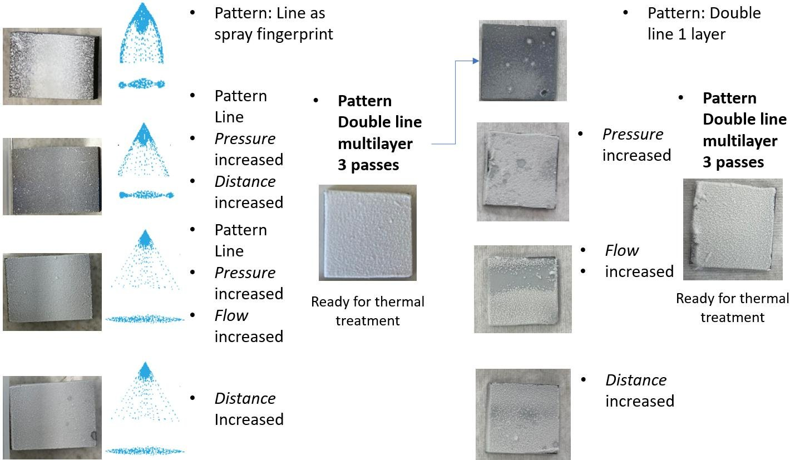
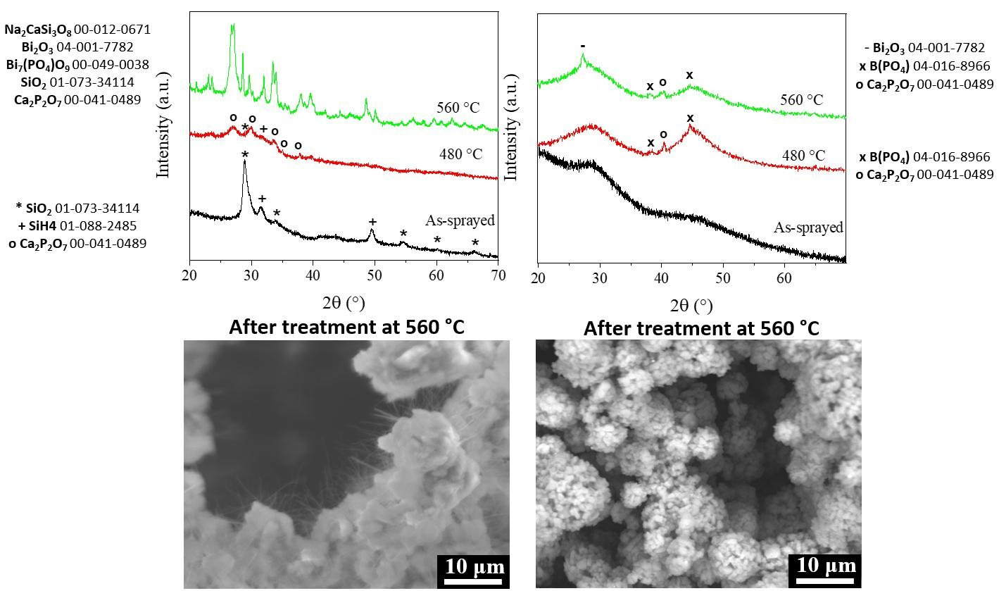
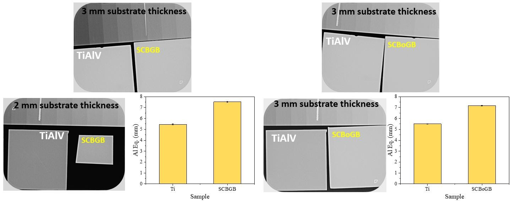

← Back to home← Volver al inicio
Spray coatingSpray coating
A spray head atomizes a suspension of bismuth-containing glass and a preceramic polymer and lays it on titanium alloy in controlled passes.Un cabezal atomiza una suspensión de vidrio con bismuto y un polímero precerámico y la deposita sobre la aleación de titanio en pasadas controladas.
The techniqueLa técnica
Video: spray coating of a glass suspension on a titanium plate.Vídeo: spray coating de una suspensión de vidrio sobre una placa de titanio. RADIOBIOCOATS, FunGlass. © TnUAD.
ProcessProceso
- BinderAglutinante
- Polycarbosilazane (PCSZ)Policarbosilazano (PCSZ)
- GlassesVidrios
- Bi-45S5 (D50 7.7 µm), Bi-13-93B3 (D50 1.85 µm)
- VariablesVariables
- Pressure, distance, flow, pattern, passesPresión, distancia, caudal, patrón, pasadas
- Final patternPatrón final
- Double line, 3 passesDoble línea, 3 pasadas
- Heat treatmentTratamiento térmico
- 480 °C, 560 °C
- SubstrateSustrato
- Ti-6Al-4V


Impactful resultsResultados destacados
+2.0 mm AlThe silicate spray coating raised the radiopacity of titanium alloy from 5.5 to 7.5 mm Al.El recubrimiento de silicato por spray elevó la radiopacidad de la aleación de titanio de 5,5 a 7,5 mm Al.
+1.7 mm AlThe borate spray coating raised it from 5.5 to 7.2 mm Al.El recubrimiento de borato por spray la elevó de 5,5 a 7,2 mm Al.
480 °CA 480 °C treatment consolidates the layers while limiting crystallization.Un tratamiento a 480 °C consolida las capas limitando la cristalización.
Gram − / +All borate coating extracts acted against both Gram-negative and Gram-positive bacteria.Todos los extractos de los recubrimientos de borato actuaron frente a bacterias Gram negativas y Gram positivas.









All radiographsTodas las radiografíasAll in vitro testsTodos los ensayos in vitroOther techniquesOtras técnicas